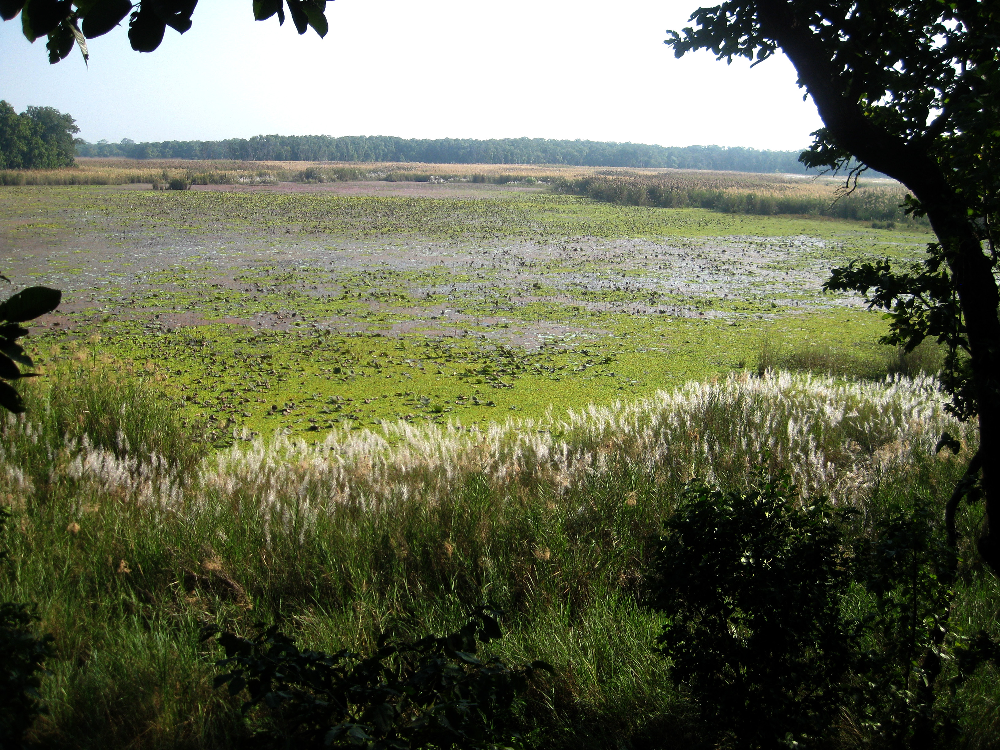
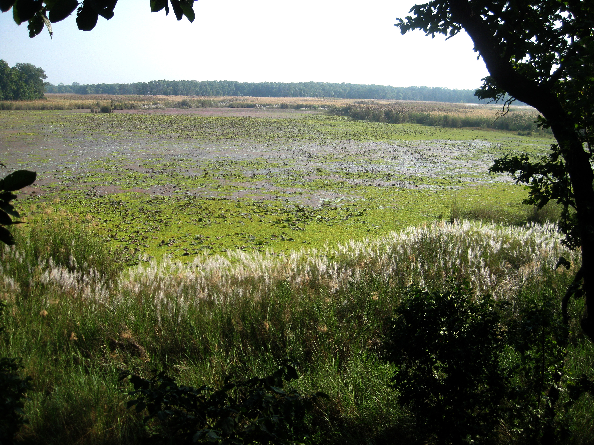

Welcome to Suklaphata Rastriya Nikunj
Where wilderness whispers and grasslands stretch far beyond the horizon. Explore Nepal’s most serene sanctuary and discover its untamed heart. Shuklaphanta National Park is a national park in the Terai of the Far-Western Region, Nepal, covering 305 km2 (118 sq mi) of open grasslands, forests, riverbeds and wetlands at an elevation of 174 to 1,386 m (571 to 4,547 ft). It is bounded by the Mahakali river in the west and south. A small part extends north of the Mahendra Highway to create a wildlife corridor for seasonal migration of wildlife into the Sivalik Hills. It was gazetted in 1976 as Royal Shuklaphanta Wildlife Reserve and was enlarged to its present size in the late 1980s. A buffer zone of 243.5km square. was added in 2004. It receives a mean annual rainfall of 1,579 mm (62.2 in) and harbours 700 floral, 456 bird, 56 reptile and 15 amphibian species.
 

Our Project
Created by a team of friends passionate about nature and technology, this project brings Suklaphata’s story to life through our eyes.